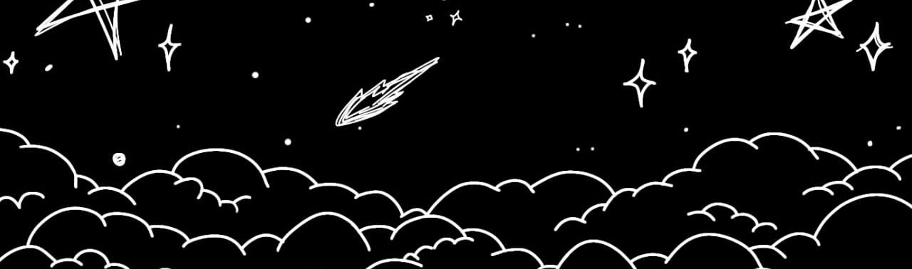
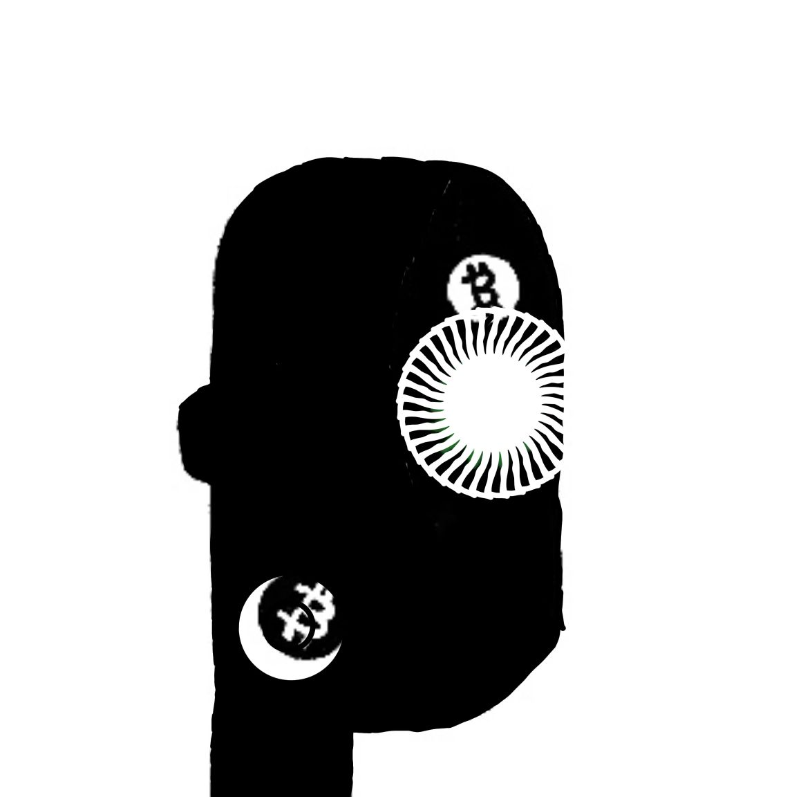
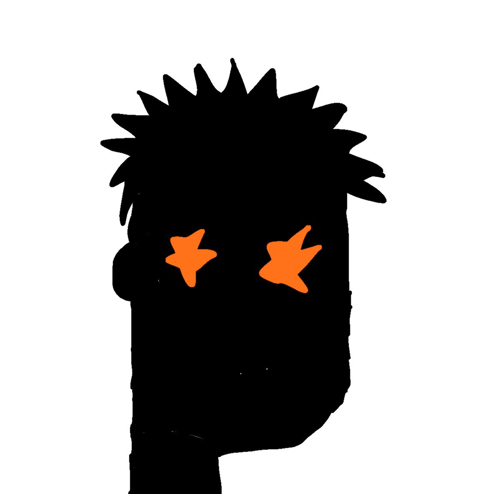

909 hand drawn maxi each having a unique trait 🟧 MaxiBitcoinMaxi
! By THe maxis for the Maxis ! A DEGEN EXPERIMENT
For the love of hand drawn art 🔶 we're creating a community of
degens that love hand drawn art.
ordinals is art and art is ordinals !
Art inspired By Tony T
! By the maxis for the maxis !


Bitcoin maxis are like the "crazy ex" of the cryptocurrency
world-they're always saying "it's going to the moon!" and "BTC is the only one that matters !",
but sometimes you wonder if they're just trying to convince themselves.
Bitcoin maxis are groupof enthusiasts who beleive that
Bitcoin(BTC) is the only cryptocurrency that matters and that it will eventually replace all
other forms of currency, including fiat currency. They often hold a strong
conviction that Bitcoin will increase in value over time. Hand
drawn Art on the number one Blockchain. An OMB derivative
Thank you Casey 🧡